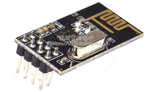

<!DOCTYPE lake>
<h2 data-lake-id="d1f2db17" id="d1f2db17"><span data-lake-id="u7532fbd8" id="u7532fbd8">NRF24L01无线2.4G控制模块</span></h2><p data-lake-id="u0a2b8dfe" id="u0a2b8dfe"><span data-lake-id="ufa24de4f" id="ufa24de4f">NRF24L01是一款工作在2.4-2.5GHz世界通用ISM频段的单片收发芯片， 使用4线SPI通讯端口，通讯速率最高可达8Mbps，适合与各种MCU连接，</span><span data-lake-id="ucd235b7c" id="ucd235b7c">编程</span><span data-lake-id="ufd68675e" id="ufd68675e">简单；输出功率、频道选择和协议的设置可以通过SPI接口设置极低的电流消耗，当工作在发射模式下发射功率为6dBm时电流消耗为9.0mA接受模式为12.3mA掉电模式和待机模式下电流消耗模式更低。</span></p><h3 data-lake-id="at4JE" id="at4JE"><span data-lake-id="u1b7851fa" id="u1b7851fa">模块来源</span></h3><p data-lake-id="u69f4283d" id="u69f4283d"><span data-lake-id="uead09e8a" id="uead09e8a">采购链接：</span></p><p data-lake-id="uac99c315" id="uac99c315"><a data-lake-id="u75ab9528" href="https://item.taobao.com/item.htm?spm=a1z09.2.0.0.2f042e8dSu55YD&amp;id=609297351472&amp;_u=j2t4uge5fa1d" id="u75ab9528" rel="noopener noreferrer" target="_blank"><span data-lake-id="u50cdb629" id="u50cdb629">NRF24L01+ 无线发射接收模块 2.4G数传收发通信模块 改进功率加强</span></a></p><p data-lake-id="ud461222e" id="ud461222e"><span data-lake-id="uab7c1723" id="uab7c1723">资料下载链接：</span></p><p data-lake-id="u5bf48bd4" id="u5bf48bd4"><span data-lake-id="u05891a1d" id="u05891a1d">https://pan.baidu.com/s/1CUQ3SOdnmD8xSXMdR4YopA</span></p><p data-lake-id="ud3628787" id="ud3628787"><span data-lake-id="ub54b16e7" id="ub54b16e7">资料提取码：1234</span></p><p data-lake-id="u8b8b0081" id="u8b8b0081" style="text-align: center"></p><p data-lake-id="ud53f1071" id="ud53f1071" style="text-align: center"><strong><span data-lake-id="ucaef08fa" id="ucaef08fa">图3.3-1 产品实物展示</span></strong></p><h3 data-lake-id="2480b759" id="2480b759"><span data-lake-id="u0ca908cc" id="u0ca908cc">规格参数</span></h3><p data-lake-id="u1391ea2f" id="u1391ea2f"><strong><span data-lake-id="u5118ef06" id="u5118ef06">工作电压</span></strong><strong><span data-lake-id="ue222d23e" id="ue222d23e">：</span></strong><span data-lake-id="u5dca74cc" id="u5dca74cc">1.9~3.6V</span></p><p data-lake-id="ue663ae8e" id="ue663ae8e"><strong><span data-lake-id="u18168bc9" id="u18168bc9">供电电流：</span></strong><span data-lake-id="udd73d74d" id="udd73d74d">900~12.3mA</span></p><p data-lake-id="u38ca4846" id="u38ca4846"><strong><span data-lake-id="ua3fcaa4c" id="ua3fcaa4c">最大</span></strong><strong><span data-lake-id="ub3563b21" id="ub3563b21">数据传输率</span></strong><strong><span data-lake-id="u714edf53" id="u714edf53">：</span></strong><span data-lake-id="u40f7250b" id="u40f7250b">2000 Kbps</span></p><p data-lake-id="ud0ddbd12" id="ud0ddbd12"><strong><span data-lake-id="u21176d77" id="u21176d77">控制方式：</span></strong><span data-lake-id="u145004df" id="u145004df">SPI</span></p><p data-lake-id="u842ac513" id="u842ac513"><strong><span data-lake-id="u7fd5316a" id="u7fd5316a">管脚</span></strong><strong><span data-lake-id="u14013730" id="u14013730">数量：</span></strong><span data-lake-id="u50062824" id="u50062824">8 Pin（2.54mm间距排针）</span></p><a class="yuque-card-link" href="https://www.yuque.com/attachments/yuque/0/2024/pdf/27903758/1720192682206-f96b433a-5604-48c2-a618-82b979f7c447.pdf">localdoc：nRF24L01芯片资料英文.pdf</a><a class="yuque-card-link" href="https://www.yuque.com/attachments/yuque/0/2024/pdf/27903758/1720192684003-12fe5716-387b-4891-90cb-66c2ae1c8613.pdf">localdoc：NRF24L01（插针2.54MM）.pdf</a><a class="yuque-card-link" href="https://www.yuque.com/attachments/yuque/0/2024/zip/27903758/1735270888213-eb018d25-8d3a-4fc7-bff7-7ccee2604933.zip">localdoc：3.3-立创开发板天空星-NRF24L01无线2.4G控制模块移植成功案例.zip</a>